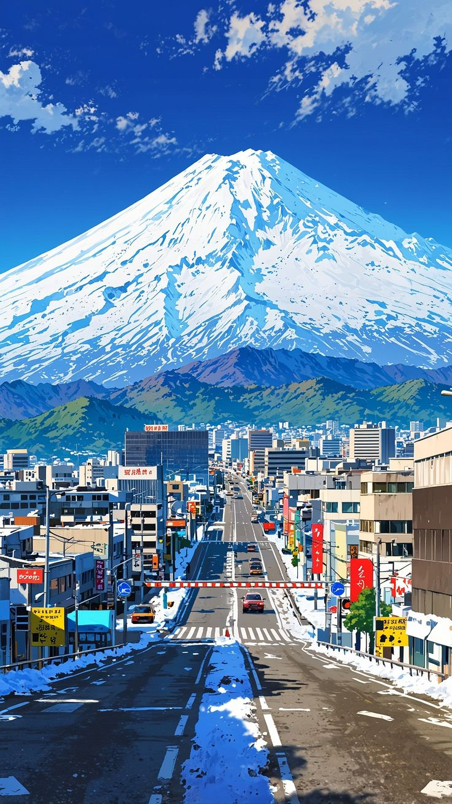

Gallery



Website ini merupakan website HTML murni tanpa menggunakan library atau framework apapun.
Dr. Stone adalah sebuah serial anime dan manga yang menceritakan tentang seorang ilmuwan jenius, Senku, yang berusaha membangun kembali peradaban setelah seluruh umat manusia berubah menjadi batu. Ceritanya penuh dengan sains, petualangan, dan humor yang menarik!
Frieren: After The End mengisahkan tentang seorang elf penyihir bernama Frieren yang menjelajahi dunia setelah kekalahan Raja Iblis. Cerita ini fokus pada refleksi tentang waktu, kehidupan, dan hubungan antar karakter. Sangat menyentuh dan mendalam!
Haikyu!! adalah anime tentang olahraga voli yang penuh semangat. Mengikuti perjalanan Hinata dan Kageyama, dua pemain voli dengan kepribadian berlawanan, yang berusaha menjadi pemain terbaik. Ceritanya inspiratif dan penuh aksi seru!
Email: varelsumampouw026@student.unsrat.ac.id
No. Telepon: 08971616331